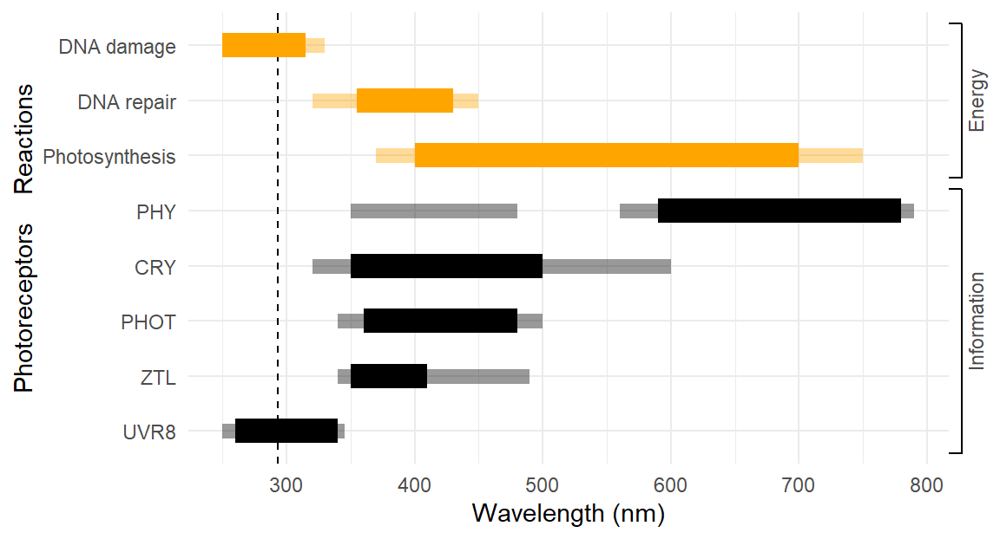
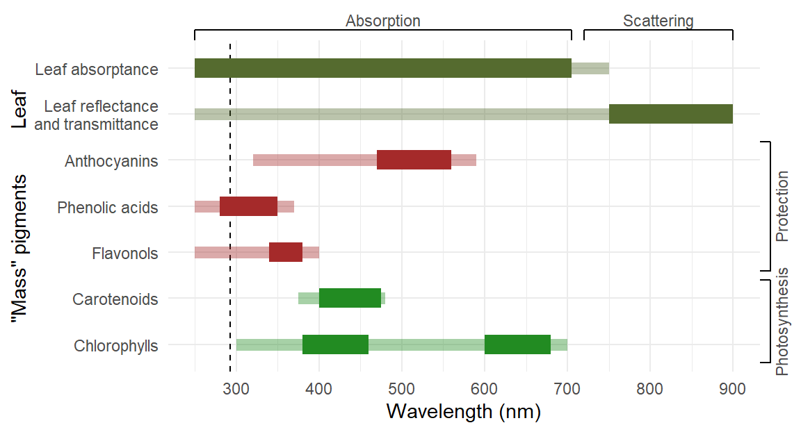

![]()
flowchart LR L((Light)) --> Ph[Photoreceptors<br/> _very low concentration_] Ph --> In[Information<br/>acquisition] --> Rg[[Regulation<br/>photomorphogenesis]] L --> Sp["Signalling" pigments<br/>_high local concentration_] Sp --> Bc[Information<br/>broadcasting] --> AD[[Attraction or<br/>dissuasion]] L --> Tg[Molecular targets<br/>of damage] Tg --> Uc[Uncontrolled<br/>changes] --> Lf[[Metabolic<br/>disruption]] L --> Sc[Screening pigments<br/> _variable concentration_] Sc --> Ed[Safe energy<br/>dissipation] --> Pr[[Protection<br/>from damage]] L --> Lh[Light-harvesting pigments<br/> _high concentration_] Lh --> Ps[Photosynthesis =<br/>Energy conversion] --> Gr[[Biomass<br/>plant growth]]
1 Introduction
Research in Plant Photobiology
1.1 Plant-Light Interactions
Light plays two crucial roles in plants. It functions as a 1) source of energy and 2) as a source of information. In addition, when in excess, ultraviolet, visible and infrared radiation can impede plants’ normal functioning and result in damage or even death. As a source of energy, radiation can drive photochemical reactions or increase the temperature of plants and their environment. Warming by infrared radiation does not involve photochemical reactions, i.e., molecular structures, including chemical bonds, are not modified. Because of this, warming by thermal radiation is considered to be outside the scope of photobiology (see Monteith and Unsworth 2008).
Photochemical reactions can be beneficial or detrimental depending on the specific reaction. As a cue, light provides information that regulates development (timing), morphology (shape and size) and biochemistry (metabolites) of plants. Plant pigments also play a role in communication, especially with insects and other animals (see Lee 2007). These roles provide a criterion to classify plant pigments, or light-absorbing chemical species, including metabolites, that absorb ultraviolet and visible radiation (Figure 1.1).
Photosynthesis is the most obvious beneficial photochemically initiated metabolic process (see Shevela, Björn, and Govindjee 2019). Photoreactivation (repair) of DNA damage is also powered by light, while damage initiated by photochemistry is mainly dependent on UV radiation (see Hideg and Strid 2017). In addition to DNA other metabolites can be damaged by photochemical reactions including lipids and proteins. In some cases leading to the accumulation of reactive oxygen species (ROS). Acquisition of information from light is also initiated by photochemical reactions in photoreceptors [see @?????]. However, these sensory reactions involve quantitatively very little energy as photoreceptor pigments are present at very low concentrations in plant cells.
Figure 1.2 shows the approximate wavelength ranges in which important plant-light interactions involving photochemistry take place. Thermal energy (not depicted) is also absorbed at longer wavelengths without involving photochemical reactions. In the case of plants photoreceptors, as in the case of colour vision in animals, including humans, the wavelength ranges that activate different photoreceptors partly overlap. The partial overlap is important for their function.

In contrast to photoreceptors, pigments that are present in plants at high concentrations (mass pigments) capture significant amounts of energy. Photons used in photosynthesis contribute energy that is stored in metabolites that are beneficial to plant growth. in contrast, the energy captured by pigments contributing to protection is dissipated safely but without directly contributing to “constructive” metabolism (Figure 1.3).

The optical properties of leaves depend both on absorption by pigments and optical phenomena that modify the path of photons, such as scattering in the mesophyll and reflection at the surface and within leaves (see Lee 2007; Johnsen 2012). Leaves can function as light traps, lengthening the path of photons within the leaf, thus, increasing the probability of interaction between incident photons and pigment molecules, i.e., enhancing the effectiveness of pigments (Vogelmann and Björn 1986).
1.2 Growth and damage
Plants are exposed to both ultraviolet (UV), visible (VIS) and infrared (IR) radiation in their natural habitats. The amount and quality of radiation they are exposed to depends on the time of the year, the latitude, the ground elevation, position in the canopy, clouds and aerosols, and for aquatic plants water depth and water quality. Acclimation, the expression of plastic responses in the phenotype of a plant in response to the environmental conditions at one point in time, determines its responses when exposed later in time to the same or a different condition (Aphalo and Sadras 2021). In recent years concerns have been raised about the potential confounding effects of maternal and within-generation “after effects” in research with plants, leading to the revision of criteria for publication in leading journals. However, “hardening” and “priming” practices based on the same physiological mechanisms have been exploited in plant cultivation for centuries.
While PAR contributes most of the radiant energy used in photosynthesis, UV-B and UV-A2 radiation contribute none. UV-A1 can make a significant contribution to photosynthesis in plants adapted or acclimated to growth in low light or shade (xxxx?). Near infrared radiation (NIR) does not significantly drive photosynthesis on its own, but can enhance the photosynthesis rate when added to PAR (xxxx effect), and effect large enough to be relevant for indoor plant production (Zhen, Iersel, and Bugbee 2021). The contributions of UV-A1- and FR radiation as drivers of photosynthesis have been recently reassessed (see Turnbull, Barlow, and Adams 2013; Sun et al. 2024; Zhen, Iersel, and Bugbee 2022).
The role of light on plants’ growth has been studied at different levels of organization. As photosynthetic metabolism has been reviewed by other authors extensively in recent years we do not extend on it here (see Shevela, Björn, and Govindjee 2019). We instead focus on the link between energy captured by photosynthesis and growth, or accumulation of biomass in plants. For example, in agriculture in the absence of other limitations, the proportionality between intercepted radiation and crop growth and yield is well established (Goudrian1989?). This rather consistent relationship highlights the need of considering the multiple steps separating light interception from growth, and how regulation of multiple non-linear processes results in an overall linear relationship. The individual processes depicted in Figure 1.4 are those usually studied and thus relate directly to the methods described in this book.
The path from incident light to biomass has several steps, each one involving a partitioning of energy Figure 1.4. These steps involve optics, photochemistry, biochemistry, anatomical and whole plant development, and in production settings the harvest of a produce of commercial or other value.
Not all radiation incident on a leaf is absorbed, not all absorbed photons contribute to photosynthesis. The products of photosynthesis only in part are used as “building blocks” of biomass, with a large part being used as a source of energy for metabolism via respiration. The energy released by respiration can be split into that contributing to the synthesis of persistent metabolites (“growth”) and that contributing to “maintenance” of already existing function, structures and metabolites (xxxx?). The accumulated biomass can be in part consumed by herbivores and pathogens, rendered a burden and discarded, or lost in other ways. In plant production only part of the accumulated biomass will be harvested. Further, part of the harvested produce may be discarded during post-harvest processing or damaged or lost during transport and storage (not shown in the diagram).
flowchart TB L([Light<br/>_irradiance and spectrum_]) == 1 to 100% ==> IL[Intercepted by leaves<br/>_leaf area index or LAI_] L -- 100 to 1% --> NIL[Not intercepted by leaves<br/>_heats soil, branches, trunks..._] NIL -- 100% --> WSA[Absorbed by objects] --> ST1([Temperature of<br/>surroundings]) IL == 70 to 90% (LEDs) ===> Ab[Absorbed<br/>light] IL -- 5 to 20% (LEDs) --> Rfl[[Reflected<br/>light]] IL -- 2 to 15% (LEDs) --> Tfr[[Transmitted<br/>light]] Ab ==> Ph[Photosynthesis] == 2 to 5%<br/>of absorbed ==> Ch([Chemical energy<br/>_metabolites_]) Ab --> Fl[[Light<br/>_fluorescence_]] Ab --> He[Heat] --> Tleaf([_temperature of leaves_]) Tleaf <--> Cv[Convection<br/>_cooling or warming_] Tleaf --> Tr[Transpiration<br/>_cooling_] Tr -- water use --> Sw([Soil water<br/>_water potential_]) Ch == 0 to 70% (?) ==> GRat([Growth rate]) GRat ==> Gr[Accumulated growth<br/>_plant size and shape_] Ch -- 100 to 30% (?) --> Mn[[Maintenance<br/>_defence and repair_]] Cv <--> Tair([Air temperature]) Tr <--> Hair([Air water vapour]) Tleaf <--> Thr[Thermal radiation<br/>_cooling or warming_] Thr <--> ST([Temperature of<br/>surroundings]) Gr == ?% ==> Hv[[Harvested<br/>valuable produce*]] Gr -- ?% --> Wst[["Waste"<br/>of no value*]] Gr -- ?% --> Ls[[Losses<br/>e.g., herbivory*]]
The simple tree-like energy-flow diagram in Figure 1.4 ignores regulation. For example, photosynthesis starts with the absorption of photons but this event and many similar ones occurring in parallel propagate up the hierarchy to chloroplasts, cells, leaves, whole plants, fields, ecosystems and the biosphere. What appears to be a simple unidirectional flow of energy across levels in the hierarchy, it is not simple because the flow is under regulation. Light and other cues from the environment play roles as sources of information for regulation of the different individual processes. Regulation and control of the flow of energy takes place concurrently across multiple levels of organization. Regulation mechanisms and interactions create regulatory control loops and paths that go backwards with respect to the main flow of energy, allowing higher levels in the hierarchy to affect lower levels. For example, a change in the display of leaves will affect the availability of energy for photosynthesis by affecting interception of radiation and will ultimately alter growth.
All biological systems are complex, and oversimplification needs to be avoided (see Fritjof Capra 2019). The most error prone step is obviously extrapolation back from a simplified model system under study to the real world with all its complexity. Consequently, it is necessary to remain aware at all times of differences between the context in which we do research and that of applications in the real world (Aphalo and Sadras 2021; Sadras et al. 2021).
Both UV and PAR when in excess can damage plants. We use excess here to indicate irradiance or length of irradiation in excess of those to which the genotype has adapted to and the phenotype has acclimated to, thus excess is a relative rather than an absolute measure. Light of an unnatural spectral composition can also challenge normal growth by disrupting light-dependent regulation and protection mechanisms, including acclimation. As plants’ metabolism and gene expression as well as metabolic regulation vary through the day, unnatural timing of events also plays a key role in disturbances leading to damage and impaired growth. Given that UV-B photons carry more energy the shorter the wavelength, in sunlight, UV-B radiation is the most likely to break chemical bonds. However, plants have evolved efficient protection and repair mechanisms against UV radiation and the damage it can cause.
From the 1970’s until the 1990’s the main interest in research on the effects of UV-B radiation on plants and other organisms was generated by the increase in ambient UV-B exposure caused by ozone depletion in the stratosphere (e.g., Caldwell 1971; Caldwell, Teramura, and Tevini 1989; Tevini 1993; Caldwell and Flint 1994). This led to many studies on the effects of increased UV-B radiation, both outdoors, in greenhouses and in controlled environments. Frequently, the results obtained in outdoor experiments differed from those obtained indoors. This led to the realization that it is important to use realistic experimental conditions with respect to UV-B radiation and its ratio compared to other wavelength bands of the solar spectrum. Interactions of responses to UV-B radiation with other environmental factors like availability of mineral nutrients, water and temperature, were also uncovered. Effects of stratospheric ozone depletion, and the concomitant increase in UV-B radiation on terrestrial and aquatic ecosystems have been periodically reviewed by UNEP (UNEP20xx? and earlier reports).
The balance between the different wavebands, UV-B, UV-A2, UV-A1 and PAR, has a big influence on the effect of UV-B radiation on plants. Unrealistically low levels of UV-A radiation and PAR potentiate the effect of UV-B radiation (e.g. Caldwell, Flint, and Searles 1994). One reason for this is that UV-A and blue radiation are required for photoreactivation, the repair of DNA damage in the light. Another reason is the role of UV-A and PAR irradiance in acclimation and regulation of photosynthesis. For example, a high irradiance of blue light and a high red:far-red photon ratio induce accumulation of screening pigments, antioxidant capacity and deployment of other protection and repair mechanisms. These are mainly responses mediated by photoreceptors, that we discuss next.
1.3 Sensing and cues
Plants photoreceptors from each of the families shown in Figure 1.2 are widely distributed in the plant kingdom. Cryptochromes are present in animals in addition to in plants. The number of members from each family varies across plant species, as gene duplications have taken place during evolution. Polyploidy, also results in multiple copies of genes, and these can subsequently evolve to play distinct roles or retain partly redundant function.
The first plant photoreceptor family identified was that of phytochromes (Sage 1992). Cryptochromes, phototropins, and UVR8 were identified years later. Several recent reviews are available (see Podolec, Demarsy, and Ulm 2021a; Rai, Morales, and Aphalo 2021; Q. Wang and Lin 2020; Morrow, Willenburg, and Liscum 2018; xxxxx?). We focus here on the most recently discovered photoreceptor family, UVR8, and the role of the complex downstream signalling network responsible for metabolic, morphogenic and developmental regulation.
The UVR8 photoreceptor is widely distributed in plants, and while there is only one UVR8 photoreceptor in Arabidopsis, many species are now known to have more than one photoreceptor in the UVR8 family (Tossi et al. 2019). In the case of cryptochromes, phototropins and phytochromes, higher plants have multiple photoreceptors in each of these families (e.g., Taiz et al. 2015, chap. 15). Maybe Javier could add a couple of lines about mosses, liverworts, etc. (Soriano et al. 2017) In lichens, the accumulation of UV-protective pigments is induced mainly by UV-B radiation (Solhaug et al. 2003). These pigments are produced by the mycobiont and protect the photobiont (Váczi, Gauslaa, and Solhaug 2018). It has been, however, reported that the UVR8 photoreceptor distribution is restricted to the Viridiplantae (Fernández et al. 2016), which seems contradictory unless the photobiont “talks” to the mycobiont or the mycobiont senses UV-B by an alternative mechanism. Is there something new known about this?
Nowadays, with ozone depletion less of an issue than a few decades ago, more emphasis is put on the role of UV radiation as a regulator of plants’ structure and function than as a cause of damage. Wavelengths in the UV-B, UV-A, PAR and NIR are now known to play roles in the regulation of metabolism, growth, development and acclimation of plants, affording tolerance to elevated PAR, UV radiation, drought, etc., through the activation of photoreceptors (Figure 1.2). Radiation of different wavelengths activate different photoreceptors and photochemical reactions, triggering complex interactive physiological responses, which currently are only partially understood.
Molecular studies have revealed a complex signalling network downstream of plant photoreceptors, which creates crosstalk leading to multiple interactions among the responses to different wavelengths. Photoreceptors regulate gene expression and in some cases also faster responses like opening and closing of ion-channels in cell membranes. The primary events sensed individually by more than a dozen photoreceptors in plants are combined during transduction making possibly a huge number qualitatively and quantitatively distinct responses depending on multiple properties of illumination: irradiance (= flux density), spectrum (= colour), direction and timing (sunflecks, day/night, seasons).
Individual photoreceptors can have multiple modes of action (Casal, Sánchez, and Botto 1998; Podolec, Demarsy, and Ulm 2021b) and the activity of one photorepector may down regulate, up regulate or inhibit the perception of cues by a different photoreceptor (Casal 2009; Zhao et al. 2023). UVR8 and cryptochrome photoreceptors reciprocally modulate their activity at the signalling level through COP1 and BES mediated-interaction, RUP- and BIC- mediated and BES1- and BIM1 mediated interactions also play a role, as well as other transcription factors including HY5 and through optical feedback (Figure 1.5) (Rai et al. 2019, 2020; Tissot and Ulm 2020; Podolec, Demarsy, and Ulm 2021b).
Interactions are not limited to molecular signalling. Cryptochromes function both as photo- and magnetoreceptors (Ahmad et al. 2007; Pooam et al. 2018) while phytochromes function both as photo- and thermoreceptors (Casal and Balasubramanian 2019). Downstream of gene expression additional routes for interactions exist: many sensory responses to UV and VIS radiation are mediated by changes in metabolism, catabolism and sensing of phytohormones, including abscisic acid (ABA), gibberellic acid, jasmonic acid, brassinosteroids and auxins (Figure 1.6) (Fernández-Milmanda and Ballaré 2021). Absorptive sun-screens or reflective structures in the epidermis, frequently induced by UV and VIS radiation, modify the light environment within leaves (see Rai, Morales, and Aphalo 2021) and even UV-induced VIS fluorescence of mass pigments such as chlorophylls and phenolic metabolites could potentially be sensed by “unexpected” photoreceptors.
Responses to UV-B radiation depend on the current and past spectrum and irradiance of UV, visible and near infrared radiation (Yan et al. 2020; Rai, Morales, and Aphalo 2021). Further downstream, HY5 and PIFs mediated signalling depends on UVR8(s) and cryptochromes but also on phytochromes (Sellaro et al. 2024) and phototropins (Vandenbussche et al. 2014). A recent proposal is that the multiple roles played by photoreceptors sharing signalling network components are made possible by compartimentalization into distinct tissues and cell-types (Depaepe, Vanhaelewyn, and Van Der Straeten 2023).
In recent years, the importance of the role of time and timing in responses to UV radiation became obvious. Outdoors, the light spectrum changes during the course of the day and with seasons, with proportionally more UV-B radiation the higher is the sun in the sky. This could explain some of the time-dependent responses of plants growing in the field. However, in addition, the circadian clock regulates gene expression, and other responses to light mediated by photoreceptors
The photoreceptors UVR8, CRYs and PHYs jointly control responses affecting optical properties and display of leaves that can modify the sensitivity to UV radiation by attenuating it or reducing its interception (Rai, Morales, and Aphalo 2021). The optical properties of the epidermis vary strongly in response to exposure to blue light and UV radiation and may also vary even during the day (Barnes et al. 2015) and seasonally (Pescheck2019?).
Even changes in optical properties of single stranded DNA in chloroplasts can affect sensitivity to damage by UV-B exposure (Saeid Nia et al. 2023). Plant species differ in their responses as a result of evolution; however broad patterns can be detected across species on the responses to different wavelength bands of sunlight (e.g., Q.-W. Wang et al. 2020). Thus, current understanding of plant responses to UV, VIS and NIR radiation indicates that a broad perspective is needed in the study of plants’ responses to UV and VIS radiation across multiple time scales (Barnes 2017; Barnes et al. 2018; Robson et al. 2019).
In sunlight, because of the shape of the solar spectrum, UVR8 “the UV-B photoreceptor” mediates responses to both UV-B and UV-A2 radiation, while CRYs are more responsive to solar blue light than to UV-A1 radiation (Rai, Morales, and Aphalo 2021). That responses to UV-A1 and UV-A2 radiation are mediated by different photoreceptors, introduces the need to differentiate between UV-A1 and UV-A2 in controlled environments as well as outdoors (Rai, Morales, and Aphalo 2021). In the case of some responses, UVR8- and CRY-dependent responses complement each other, and a strong phenotype is observed only when both photoreceptors are inactive (Rai et al. 2020; Tissot and Ulm 2020). When considering UV experiments in the field, these distinct roles of UV-A1 and UV-A2 in sunlight provide a possible explanation to some of the puzzling effects previously reported for UV-A controls in UV-B experiments (Verdaguer et al. 2017).
Both acclimation and adaptation are crucial to fitness of wild plants, and for yield of crops subjected to breeding (Aphalo and Sadras 2022). As a result of adaptation and breeding the genotype changes over multiple generations, more precisely the frequency of alleles encoding selected-for traits increases in the population. Acclimation is the result of plasticity allowing the expression of different phenotypes from a given genotype. Acclimation occurs when the previously experienced environment affects later responses favourably. Acclimation can be triggered by a cue or variable that is not necessarily mechanistically related to the later response. This is so because environmental correlations in the natural environment are exploited by plants and other organisms as sources of information (Aphalo and Sadras 2022). Time is important with respect to the developmental stage and previous “experience” (a life-time memory) (Rai et al. 2019) and, in some cases at least, previous generations’ “experience” (maternal effects) (Yan et al. 2020). Developmental stages also impose constraints on acclimation, because as the life of a plant progresses, more past commitments limit the remaining room for plasticity (Novoplansky 2009).
Acclimation of stomatal responses to visible in response to exposure to UV radiation (Ač et al. 2024) and of photosynthesis to high versus low light levels (Brelsford et al. 2018), can be relevant to drought tolerance (Jansen et al. 2021; Aphalo and Sadras 2022) and also involves the participation of photoreceptors, sensing UV radiation. In the case of stomata, acclimation dependent on UV radiation can involve changes in opening speed as well as in relative sensitivity to radiation of different wavelengths (Aasamaa and Aphalo 2017). However, a direct role of UV radiation in stomatal opening and closing at a time scale of minutes remains controversial.
The importance of photoperiodism in some plants’ responses has been recognised for a long time. However, recent progress has shown that not only photoperiodic, stomatal and photosynthesis responses but also photomorphogenic responses depend on the time of day (Sellaro et al. 2024). The daily time course of UVR8 dimerization state (Liao et al. 2020) and the seasonality of responses mediated by UVR8 are also two important aspects of timing (Coffey and Jansen 2018).
Temporal (from seasonal to milliseconds) and spatial heterogeneity in the light environment of plants are an ever present feature outdoors (Hartikainen et al. 2020; Kotilainen et al. 2020; Durand and Robson 2023). Furthermore, even if in its infancy, the study of responses to pulsed light has shown that photoreceptor-dependent responses are not proportional to the average light conditions during the photoperiod, but instead, temporal integration of cues is far more complex and can involve multiple photoreceptors, including UVR8, and PHYs (Sellaro et al. 2024).
In recent years the choice of species has been influenced by the increasing interest in the potential use of UV wavelengths in protected cropping, where exposure to UV radiation can be used to increase the content of desirable plant metabolites (Neugart and Schreiner 2018; Crestani et al. 2024), adjust plant morphology resulting in a more compact and stocky plant (Qian et al. 2021) and induce stress resistance (Crestani et al. 2023). Similar effects of specific wavelength bands of visible radiation have been described (e.g. Popp 1926; Wassink and Stolwijk 1956) and their relevance to horticulture recognized (e.g. Reinders-Gouwentak, Smeet, and Andeweg 1951) already long time ago. The increasing adoption of LED-based illumination for plant cultivation facilitates the use of different spectra. This has lead to increased interest in research on plant cultivation under artificial illumination and the optimization of energy use targeting harvest volume as well as organoleptic and nutritional quality (XXXXXX?). To study plant responses to UV, VIS and/or NIR radiation, consideration of the whole daylight spectrum as well as of the life history of the plants is necessary. It is also necessary to keep in mind relevance to agriculture (Sadras et al. 2021), biological resilience (Thorogood et al. 2023) and the UN Sustainable Development Goals.
At the time the first edition was published, it had already been recognised that the balance between UV-B radiation and longer wavelengths and the timing of UV-B exposure at noon were needed for relevance of research to plants growing in sunlight. Research since then has revealed complex signalling, making it important also for mechanistic UV studies in controlled environments to be aware of VIS and NIR radiation and the corresponding photoreceptors, and vice-versa. This is reflected in that several currently active research groups have already bridged the artificial divide between UV plant photobiology and the rest of plant photobiology.
1.4 Scope of this second edition
Given emerging insights into the importance of crosstalk between different wavelength bands, photoreceptors and signalling pathways, in controlling plant UV and VIS radiation responses, for this second edition we have broadened the scope of the handbook to include a wider range of wavelengths (280-900\,\mathrm{nm}) and changed its title.
To be able to obtain reliable results from experiments on the effects of UV and VIS radiation on plants, there are many different problems and decisions that need to be dealt with. Making these decisions requires background knowledge of photobiology, optics, radiation physics, the natural radiation environment and its climatology, which we cover in the first chapters. Later chapters cover skills in the design of experiments, quantification and manipulation of the UV and VIS radiation environment, plant cultivation, data collection, data visualization and data analysis. We have however, avoided overlap with other existing publications by excluding, at least initially, methods for the measurement of photosynthesis or plant growth, and chemical/biochemical methods used at the laboratory bench.